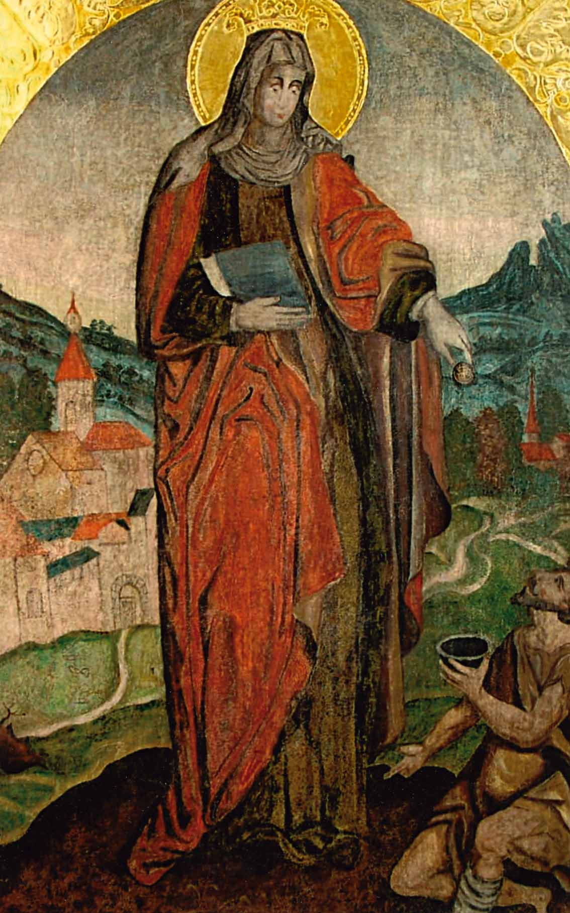
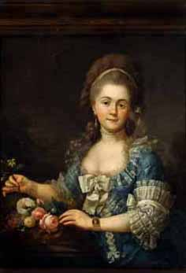

KONSERWACJA DZIE£ SZTUKI
MARIA LISOWSKA - DZIUBA
HOME
INFO
REFERENCJE
PRACE
DOTACJE
MALARSTWO
METRYCZKA
KONTAKT
ZDJÊCIA PRAC


O³tarz barokowy polichromowany i z³ocony w ko¶ciele p.w. ¦w. Miko³aja w Krakowie.
Przed i po konserwacji.


Rze¼ba "Chrystus Frasobliwy" XVII wiek w ko¶ciele ¦w. Miko³aja w Krakowie.
Przed i po konserwacji.


Polichromia wed³ug projektu Jana Matejki w kaplicy ¦w. Kingi w Bazylice
¦w. Miko³aja w Bochni. Przed i po konserwacji.


Kaplica ¦w. Kingi w Bazylice ¦w. Miko³aja w Bochni - fresk gotycki "Rozes³anie Aposto³ów"
z oko³o1460 roku, oraz polichromia wed³ug projektu Jana Matejki. Przed i po konserwacji.


"Z³o¿enie do grobu" obraz olejny na p³ótnie XVII wiek z ko¶cio³a p.w. N.P. Marii
(OO Kamedu³ów) na Bielanach w Krakowie. Przed i po konserwacji.


¦w. El¿bieta Wêgierska - skrzyd³o tryptyku XVI wiek - tempera na desce. Z drewnianego
ko¶cio³a gotyckiego z 1567 roku w Trybszu (SAD). Przed i po konserwacji.

Obraz po konserwacji, eksponowany w Sali Senackiej Akademii Sztuk Piêknych
w Krakowie. Portret Anny ze Scypionów Ma³ogowskiej autorstwa Grassiego.

Obraz o³tarzowy "Mêczeñstwo ¦w. Sebastiana" XVIII wiek z ko¶cio³a klasztornego
OO Kamedu³ów na Bielanach w Krakowie. Po konserwacji.

Po konserwacji. Obraz w³oski z 1768 roku z cyklu "Cuda ¦w. Jana Kantego".
W Kolegiacie Akademickiej ¦w. Anny w Krakowie.

Po konserwacji. Kaplica renesansowa ¦w. Romualda, polichromia, sztukaterie,
z³ocenia w ko¶ciele klasztornym OO Kamedu³ów na Bielanach w Krakowie.

Po konserwacji. Kaplica renesansowa "Królewska" w ko¶ciele klasztornym
OO Kamedu³ów na Bielanach w Krakowie.

Po konserwacji. Kaplica renesansowa "Królewska" z polichromi± i sztukateriami
oraz obrazami Tomasza Dolabelli w ko¶ciele klasztornym OO Kamedu³ów na Bielanach
w Krakowie.

Po konserwacji. Obraz ¦w. Kingi w kaplicy ¦w. Kingi w Bazylice ¦w. Miko³aja w Bochni.

Po konserwacji. O³tarz wed³ug projektu Jana Matejki w kaplicy ¦w. Kingi
w Bazylice ¦w. Miko³aja w Bochni.

Rekonstrukcja nie zachowanej polichromii Jana Matejki na sklepieniu kaplicy
¦w. Kingi w Bazylice ¦w. Miko³aja w Bochni.

Po konserwacji. Obraz "Przemienienie Pañskie" XVII wiek - tempera na desce
z gotyckiego ko¶cio³a drewnianego w Trybszu (SAD).


"Ecce Homo" - skrzyd³o tryptyku - XVI wiek - tempera na desce - w trakcie konserwacji.
XVI-wieczny ko¶ció³ drewniany w Trybszu (SAD).


Matka Boska Niepokalanie Poczêta - XVI wiek
- rze¼ba drewniana polichromowana, tempera
- w trakcie konserwacji.
XVI-wieczny ko¶ció³ drewniany w Trybszu ( SAD ).


Rze¼ba Chrystusa Ukrzy¿owanego XV / XVI wiek z belki têczowej
w drewnianym ko¶ciele z 1667 r. p.w. ¦w. Marcina w Marcyporêbie
w województwie ma³opolskim ( SAD ).
Przed i po konserwacji.


Stalle barokowe z 1667 roku z cyklem 16 obrazów tablicowych, dzieje ¦w. Jana Chrzciciela
i ¦w. Stanis³awa Biskupa w Bazylice ¦w. Miko³aja w Bochni.
Przed, w trakcie i po konserwacji.